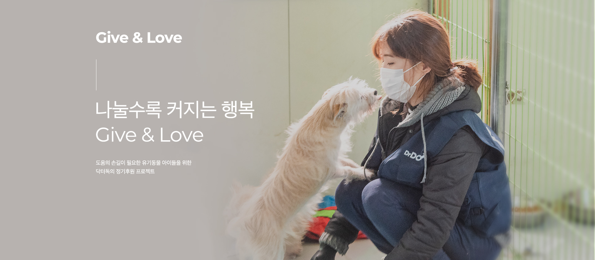
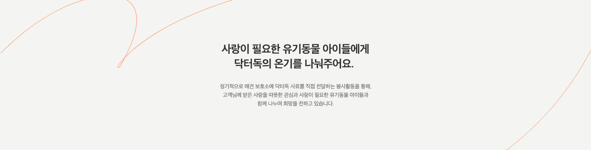
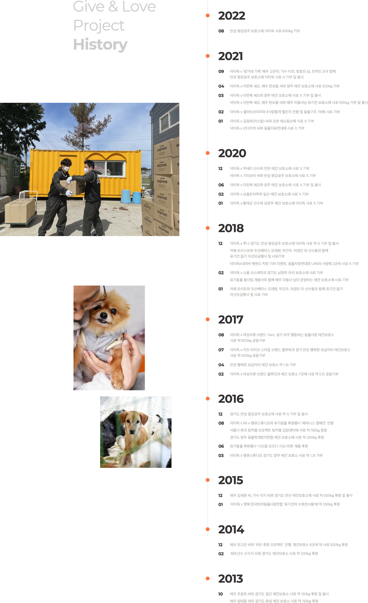

<%@ page language="java" contentType="text/html; charset=UTF-8"
    pageEncoding="UTF-8"%>
<!DOCTYPE html>
<html">
<head>
    <meta charset="UTF-8">
    <meta http-equiv="X-UA-Compatible" content="IE=edge">
    <meta name="viewport" content="width=device-width,initial-scale=1.0,minimum-scale=1.0,maximum-scale=1.0,user-scalable=no">
    <title>닥터독-가족이지만 말 못하는 그들을 위해</title>
    <!-- 메타포 -->
    <meta name="description" content="닥터독은 육류·다양한 과채류 및 제약회사에서 사용중인 기능성 원료를 결합한 최상의 영양설계 강아지사료입니다.">
    <meta name="keywords" content="닥터독, Drdog, 강아지사료, 강아지간식, 강아지영양제, 강아지화식">
    <!-- 오픈그래프 -->
    <meta property="og:site_name" content="닥터독-가족이지만 말 못하는 그들을 위해">
    <meta property="og:title" content="닥터독-가족이지만 말 못하는 그들을 위해">
    <meta property="og:url" content="https://okdoctordog.com/index.jsp">
    <meta property="og:type" content="website">
    <meta property="og:description" content="닥터독은 육류·다양한 과채류 및 제약회사에서 사용중인 기능성 원료를 결합한 최상의 영양설계 강아지사료입니다.">
    <meta property="og:image" content="./img/logo/header_logo_mini.png"> 
    <meta property="og:image:width" content="800">
    <meta property="og:image:height" content="400">
    <!-- 파비콘 -->
    <link rel="shortcut icon" href="./img/favi/favicon.ico" type="image/x-icon">
    <link rel="icon" href="./img/favi/favicon.ico" type="image/x-icon">
    <!-- 각 종 플러그인과 설정 파일 -->
    <link href="https://fonts.googleapis.com/css2?family=Nanum+Gothic&family=Noto+Sans+KR&display=swap" rel="stylesheet">
    <!-- 구형 브라우저 html5태그 인식 -->
    <script src="./js/html5shiv.js"></script>
    <!-- 구형 브라우저에서 css animation 인식 -->
    <script src="./js/prefixfree.min.js"></script>
    <!-- 구형 브라우저에서 미디어쿼리 인식 -->
    <script src="./js/respond.min.js"></script>
    <!-- jquery 플러그인 연결 -->
    <script src="./js/jquery-1.11.1.js"></script>
    <link rel="stylesheet" href="./css/reset2.css">
    <link rel="stylesheet" href="./css/header.css">
    <!-- bootstrap link -->
    <link href="https://cdn.jsdelivr.net/npm/bootstrap@5.2.2/dist/css/bootstrap.min.css" rel="stylesheet">
    <link href="https://getbootstrap.com/docs/5.2/assets/css/docs.css" rel="stylesheet">
    <script src="https://cdn.jsdelivr.net/npm/bootstrap@5.2.2/dist/js/bootstrap.bundle.min.js"></script>
    <!--header.css -->
    <!-- <link rel="stylesheet" href="./css/header.css"> -->
    <!--footer.css-->
    <!-- <link rel="stylesheet" href="./css/footer.css"> -->
    <!-- 폰트 Nanum Gothic -->
    <link rel="preconnect" href="https://fonts.googleapis.com">
    <link rel="preconnect" href="https://fonts.gstatic.com" crossorigin>
    <link href="https://fonts.googleapis.com/css2?family=Ms+Madi&family=Nanum+Gothic&display=swap" rel="stylesheet">

    <style>
    body {font-family: 'Nanum Gothic', sans-serif;}  
    img {border: none; vertical-align: top; margin: 0; padding: 0;}
    .wrap {height: auto; min-height: 100%;} 
    .wrap:after {content: ""; display: block; clear: both;}

    /*head*/
    .dropdown-menu {border-radius:0%}
    .text-secondary {margin-left: 20px;}
    .navbar {--bs-navbar-padding-y: 0; height: 100px; padding: 20px;}

    /*main*/
    .page_wrap {width: 100%; margin: 0 auto;}
    .container-fluid {padding-left: 0; padding-right: 0;}
    .content .pic1 {padding-top: 100px;}
    .content .pic4 {padding-bottom : 100px}
    .content .history {padding-bottom: 100px;}
 
    
    /*btn*/
     
    /*foot*/
    .ft {position: relative; height: 470px; width: 100%;}
    .ft_wrap:after { content:""; display:block; clear:both; }
    .ft_wrap .ft-top a {display: inline-block; font-family: 'AppleGothic-B'; font-size: 16px; color: #aaaba6; letter-spacing: -0.025em;}
    .ft_wrap .ft-top a:after {content: ''; display: inline-block; width: 1px; height: 14px; margin: 0 30px; background: #e2e5e4; vertical-align: middle;}
    .ft_wrap .ft-top {width: 1300px; margin: 0 auto;}
    .ft_wrap .left {float: left; width: 50%; height: 100%; padding-top: 100px; padding-left: 300px; padding-right: 150px; background: #353131; box-sizing: border-box; font-size: 14px; font-weight: 400; position: relative; overflow: hidden;}
    .ft_wrap .right {float: left; width: 50%; height: 100%; padding-top: 100px; background: #292626; box-sizing: border-box; overflow: hidden;}
    .ft_wrap .right .right1 {clear: both; float: left; padding-left: 90px; padding-right: 90px; border-right: 1px solid #6a6966; position: relative;}
    .ft_wrap .right .right2 {float: left; padding-left: 90px; padding-right: 90px; position: relative;}
    .ft-top {height: 50px; line-height: 50px;}
    .ft .ft_wrap {height: 430px; display: block;}
    .ft p {color: #aaaba6;}
    .pic_fb {display: block; float: left; margin-right: 10px;}
    .pic_is {display: block; float: left; margin-right: 10px;}
    .pic_yt {display: block; padding-top: 2px;}
    .copyright_title {font-weight: 700;}
    .copyright_title2 {font-weight: 700; margin-bottom: 20px;}
    .copyright_title3 {font-weight: 700; margin-top: 30px;}
    .ft_tel {font-size: 50px; font-weight: 700;}
    .weekend {font-size: 12px;}
    .humu {margin-bottom: 70px;}  
    </style>
</head>
<body>
<div class="wrap">
<header class="hd">
    <div class="hd_wrap">
         <%@ include file="../header.jsp" %>
    </div>
</header>
<div class="content container-fluid bg-light">
    <div class="page_wrap">    
        <div class="content">
            
            
            
        </div>
    </div> 
</div> 
</div>   
</body>
<footer class="ft container-sticky">
    <%@ include file="../footer.jsp" %>
</footer>
</html>